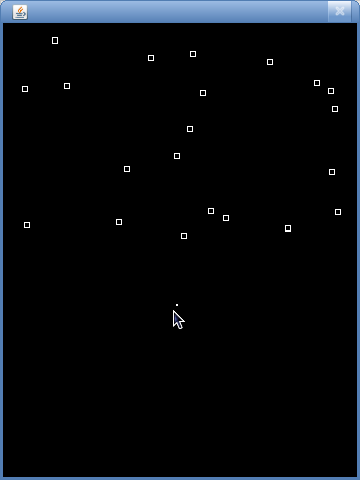

Pakolliset tehtävät on merkitty harmalla taustavärillä. Punaisella taustavärillä merkatut ovat kontrollitehtäviä, jotka näytetään ohjaajalle harjoitustilaisuudessa!
HUOM: nimeä tiedostot otsikossa olevan sanan mukaan
Tietojenkäsittelytieteen laitoksen kesän 2010 erilliskokeet on listattu tällä sivulla.. WWW-sivuja tehdään HTML-merkkauskielellä. Avaa sivu ja katso sen lähdekoodi painamalla Firefoxissa ctrl+u tai valitsemalla valikosta View → Page Source.
Tehdään ohjelma, joka hakee tuon sivun ja hakee sivun lähdekoodista kursseja.
Laita seuraava pääohjelmaan. Tarvitsemme siis kaksi luokkaa: WebSivu ja WebHakija.
WebSivu koeaikataulu = WebHakija.hae("http://www.cs.helsinki.fi/kokeet/ekokeetv10.html");
System.out.println("Sivu haettu: " + koeaikataulu.getPvm());
System.out.println("Sivun lähdekoodissa on rivejä: " + koeaikataulu.getRivit());
Ohjelma tulostaa seuraavaa:
Sivu haettu: Sat Apr 24 14:38:33 EEST 2010 Sivun lähdekoodissa on rivejä: 241
Päivämäärän saat luomalla uuden ilmentymän Date-luokasta. Olion oletus toString() toimii ylläolevan tulosteen mukaisesti. Huom! Luo päivämääräolio samalla, kun olio luodaan! Ei siis getPvm()-metodin yhteydessä.
WebHakija:n toteutukseen saat seuraavat vihjeet:
URL url = new URL(osoite); Scanner l = new Scanner(url.openStream()); String sisalto = ""; return new WebSivu(sisalto);
Muista tallettaa sisältö siten, että jokaisen rivin päätteeksi on rivinvaihto. Tällöin rivimäärän laskeminen on kätevää String-luokan metodilla split("\n").
Lisää seuraava pääohjelman perään:
System.out.println("\n\nHaetaan Luukkaisen, Paksulan ja Vihavaisen kurssit:\n");
TekstiHakija th = new TekstiHakija(koeaikataulu.getSisalto());
for (String rivi : th.rivitJoilla("Luukkainen")) {
System.out.println(rivi);
}
for (String rivi : th.rivitJoilla("Paksula")) {
System.out.println(rivi);
}
for (String rivi : th.rivitJoilla("Vihavainen")) {
System.out.println(rivi);
}
TekstiHakija saa konstruktorissaan sivun lähdekoodin Stringinä. Metodi rivitJoilla(String) palauttaa ArrayList<String> listan hakutuloksia. String-luokan metodit split(String) ja contains(String) ovat käteviä metodin toteutukseen.
Ohjelma tulostaa seuraavaa:
Haetaan Luukkaisen, Paksulan ja Vihavaisen kurssit: 581325 Ohjelmoinnin perusteet / Luukkainen <br> 582103 Ohjelmoinnin jatkokurssi (U) / Luukkainen <br> 58131 Tietorakenteet (U) / Luukkainen <br> 582104 Ohjelmistojen mallintaminen / Luukkainen<br> 58131 Tietorakenteet / Luukkainen <br> 582104 Ohjelmistojen mallintaminen / Luukkainen<br> 581259 Ohjelmistotuotanto / Luukkainen <br> 582331 Ketterä web-kehitys ja Ruby on Rails (HT) / Paksula <br> 58144 Ohjelmointikielten kääntäjät (HT/U) / Vihavainen<br> 581251 Ohjelmointitekniikka (C++) (HT/U) / Vihavainen<br>
Poista lopussa oleva <br>
Korvaa toistuvat for-loopit yhdellä, jossa hakusanat on lista hakusanoja. Kuormita metodia rivitJoilla()
Hae hakusanoilla "Jaring", "Jokela" ja "Nurmi".
for (String rivi : th.rivitJoilla(hakusanat)) {
System.out.println(rivi);
}
Haetaan Jaringin, Jokelan ja Nurmen kurssit: 582630 Algoritmien suunnittelu ja analyysi / Nurmi 581361 Software Testing / Jaring 582201 Käyttöliittymät / Jokela 582632 Diskreetti optimointi / Nurmi 582656 Käytettävyyssuunnittelu / Jokela 582209 Grafiikkaohjelmointi / Nurmi 582401 Geometriset menetelmät (U) / Nurmi 582201 Käyttöliittymät / Jokela
Tehdään kertoimet 1 ja 2 uudestaan, mutta paremmin.
HUOM: älä copy-pastea vanhaa kerrointasi - on tärkeää, että ajattelet asian alusta asti uudestaan. Lisäksi vain harvoilla oli tehtävä täysin oikein, tämä tehtävä kurssin ydinasiaa.
Luo ilmentymät luokista Saab ja Volvo. Toteuta näille luokille abstrakti yläluokka Auto. Jaettu toiminnallisuus (rekisterinumeron talletus ja aja-metodi) tulee olla tässä yläluokassa.
Huom: Saabissa tai Volvossa ei tule olla siis mitään muuta kuin konstruktori (jonka sisällä on 1 rivi).
// Autot
Saab s = new Saab("313");
Saab s2 = new Saab("616");
Volvo v = new Volvo("821");
s.aja();
v.aja();
SA-313 sanoo Vrrrrrrooooooooooom! VO-821 sanoo Vrrrrrrooooooooooom!
Toteuta bongausmuistio siten, että avaimena on auton rekisterinumero, eikä viitettä autoon tms. Tämä siksi, että autot s ja s2 vaihtavat keskenään rekisterikilpiä! Bongaaja ei tiedä tästä ja kirjaa bongaukset pelkästään rekisterikilven mukaan.
Toteuta bongaus siten, että käytät metodissa vain yhtä put-komentoa & Portsaria (katso materiaali).
// Bongaukset
Bongausmuistio bm = new Bongausmuistio();
bm.bongaa(v);
bm.bongaa(s);
bm.bongaa(s2);
System.out.println(bm);
bm.bongaa(s);
bm.bongaa(s);
System.out.println(bm);
// katala temppu
s.setRekisterinumero("616");
s2.setRekisterinumero("313");
bm.bongaa(s);
bm.bongaa(s);
System.out.println(bm);
TARKISTA, että luvut ovat oikein!
{SA-616=1, SA-313=1, VO-821=1}
{SA-616=1, SA-313=3, VO-821=1}
{SA-616=3, SA-313=3, VO-821=1}
Peräkärry ja Traileri periytyvät abstraktista yläluokasta Raahattava. Toteuta Peräkärry ja Traileri siten, että kaikki toiminnallisuus on yläluokassa. Näissä luokissa tulee olla vain konstruktori ja toString-metodi. Metodien pituudet ovat max. 1 rivi.
Tee rajapinta Vetokoukullinen määrittelee metodin kytke(Kytkettava k) ja irroita(). Autot toteuttavat rajapinnan Vetokoukullinen. Traileri ja Perakarry toteuttavat rajapinnan Kytkettava. Kytkennän toteutuksessa tulee käyttää viitettä kytkettävään.
Vinkki: abstrakti luokka voi myös toteuttaa rajapinnan!
Huomaa: että jos kytkettava on jo kytketty, ei kytkeminen onnistu! (kytkeminen ei tällöin tee mitään)
// Kytkettävät ja raahattavat
Traileri venetraileri = new Traileri("PHX-243");
Perakarry karry = new Perakarry("AXX-912");
s.kytke(venetraileri);
System.out.println(s);
s.irroita();
System.out.println(s);
s.kytke(karry);
System.out.println(s);
s.kytke(venetraileri);
System.out.println(s);
Autoon kytketty: traileri PHX-243 Autoon kytketty: ei mitään Autoon kytketty: peräkärry AXX-912 Autoon kytketty: peräkärry AXX-912
Luo abstrakti luokka Kuvio. Kuviolla on attribuutit x ja y, jotka kertovat kuvion sijainnin ruudulla sekä metodi void siirra(int dx, int dy) jonka avulla kuvion sijainti siirtyy parametrina olevien kordinaattisiirtymien verran. Esim. jos sijainti aluksi on (100,100), niin kutsun siirra(10,-50) jälkeen sijainti on (110, 50). Luokan konstruktori asettaa kuviolle alkusijainnin. Luokalla on myös abstrakti metodi public abstract void piirra(Graphics r); jolla kuvio piirretään ruudulle.
Tee luokka Ympyra joka perii Kuvion. Ympyrällä on halkaisija jonka arvo asetetaan konstruktorissa. Konstruktorissa asetetaan myös alkuperäinen sijainti. Ympyra määrittelee metodin piirra asiaan kuuluvalla tavalla.
Luo Piirtoalusta samaan tyyliin kuten viikon 5 tehtävässä 4 tai viikon 5 materiaalin luvussa 4.3 tehtiin. Piirtoalusta saa konstruktorin parametrina Kuvio-tyyppisen olion. paint()-metodissa Piirtoalusta pyytää kuvioa piirtämään itsensä, eli kutsuu sen piirra-metodia.
Laajenna piirtoalustaa siten, että kuvioa voi liikutella nuolinäppäinten avulla. Viikon 5 materiaalin luvusta 4.4 on tässä apua.
Peri luokasta Kuvio luokat Nelio ja Laatikko. Neliölle asetetaan konstruktorissa alkusijainnin lisäksi sivun pituus. Laatikolla on korkeus ja leveys.
Varmista, että neliöt ja laatikot piirtyvät ja liikkuvat oikein Piirtoalustalla.
Peri luokasta Kuvio luokka KoosteKuvio. Koostekuvio sisältää joukon muita kuvioita jotka se tallettaa ArrayList:iin. Koostekuviolla on metodi public void liita(Kuvio k) jonka avulla koostekuvioon voi liittää kuvio-olion. Koostekuviolla ei ole omaa sijaintia. Koostekuvio piirtää itsensä pyytämällä osiaan piirtämään itsensä, koostekuvion siirtyminen tapahtuu samoin.
Testaa että koostekuviosi piirtyy ja siirtyy oikein, esim. seuraavan koostekuvion avulla:
Kuvio y1 = new Ympyra(90, 100, 50);
Kuvio y2 = new Ympyra(95, 105, 40);
KoosteKuvio takaRengas = new KoosteKuvio();
takaRengas.liita(y1);
takaRengas.liita(y2);
Piirtoalusta alusta = new Piirtoalusta(linjaAuto);
// ...
Linja-autolla on kaksi rengasta. Molemmat ovat kahdesta ympyrästä muodostuvia koostekuvioita. Linja-autolla on myös runko ja ainakin yksi ikkuna. Linja-auto on siis koostekuvio joka koostuu useasta kuviosta joista osa on koostekuvioita. Luo linja-auto ja liikuttele sitä ruudulla.
Huomaa miten olioiden vastuut jakautuvat tehtävässä. Jokainen Kuvio on vastuussa itsensä piirtämisestä ja siirtämisestä. Yksinkertaiset kuviot siirtyvät kaikki samalla tavalla. Jokaisen yksinkertaisen kuvion on itse hoidettava piirtymisestään. KoosteKuvio siirtää itsensä pyytämällä osiaan siirtymään, samoin hoituu koostekuvion piirtyminen. Piirtoalusta tuntee Kuvio-olion joka siis voi olla mikä tahansa yksinkertainen kuvio tai koostekuvio, kaikki piirretään ja siirretään samalla tavalla. Piirtoalusta siis toimii samalla tavalla kuvan oikeasta tyypistä huolimatta, piirtoalustan ei tarvitse tietää kuvion yksityiskohdista mitään. Kun piirtoalusta kutsuu kuvion metodia piirra tai siirra polymorfismin ansiosta kutsutuksi tulee kuvion todellista tyyppiä vastaava metodi.
Huomionarvoista tehtävässä on se, että KoosteKuvio voi sisältää mitä tahansa Kuvio-olioita, siis myös koostekuvioita! Luokkarakenne mahdollistaakin mielivaltaisen monimutkaisen kuvion muodostamisen ja kuvion siirtely ja piirtäminen tapahtuu aina täsmälleen samalla tavalla.
Luokkarakennetta on myös helppo laajentaa, esim. perimällä Kuvio-luokasta uusia kuviotyyppejä: kolmio, piste, viiva, ym... KoosteKuvio toimii ilman muutoksia myös uusien kuviotyyppien kanssa, samoin piirtoalusta.
Jatkuva päänsärky ei lähde pois vaikka kuinka haluaisi. Päänsärystä on olemassa siis vain yksi ilmentymä, joka ei muutu kun sen saa. Luo luokka Paansarky, jolla on attribuutti aani, joka ilmaistaan char-tyyppisenä muuttujana, sekä voimakkuus, joka ilmaistaan kokonaislukuna. Luokan konstruktori on private-tyyppinen, päänsärkyyn päästään käsiksi vain staattisen metodin getPaansarky()-avulla. Jos päänsärkyä ei ole vielä olemassa, staattinen metodi getPaansarky() luo sen. Arvo voimakkuus arvojen 0 ja 50 väliltä, äänelle arvotaan arvo seuraavien vokaalien joukosta: a, e, i, o, i, y, ä, ö
Käytä seuraavaa toString()-metodia päänsärylle.
public String toString() {
String palautus = "";
for(int i = 0; i < voimakkuus; i++) {
palautus += aani;
}
return palautus;
}
Testaa luokkaa Paansarky seuraavan pääohjelman avulla:
Paansarky jatkuva = Paansarky.getPaansarky(); System.out.println(jatkuva); Paansarky toinen = Paansarky.getPaansarky(); System.out.println(toinen);
Tulostus on esimerkiksi seuraavanlainen
iiiiiiiiiiiiiiiiii iiiiiiiiiiiiiiiiii
Tässä tehtävässä jatketaan viime viikolla aloitettua Ilmojärjestelmää tekemällä sille graafinen käyttöliittymä.
Luo sisäänkirjautuminen JDialog-luokkaa laajentavana luokkana ja toteuta sille metodi luoSisalto().
public class SisaanKirjautuminen extends JDialog {
private JTextField kayttajatunnus;
private JPasswordField salasanaKentta;
private JButton kirjauduNappula;
private Ilmo ilmo;
private Kayttajatietokanta kayttajatietokanta;
public SisaanKirjautuminen(Ilmo ilmo, Kayttajatietokanta kayttajatietokanta) {
super();
this.ilmo = ilmo;
this.kayttajatietokanta = kayttajatietokanta;
luoSisalto();
pack();
setSize(getWidth() + 200, getHeight());
setDefaultCloseOperation(WindowConstants.DISPOSE_ON_CLOSE);
setVisible(true);
}
private void luoSisalto() {
// TODO: luo sisältö
}
}
Metodissa luoSisalto() luodaan käyttöliittymälle sisältö, ja asetetaan se yläluokan sisällöksi setContentPane()-metodilla. Voit käyttää luokan JPanel ilmentymää pohjana paneelille siten, että sille asetetaan sisältö. JPanel-ilmentymään voidaan lisätä myös uusia JPanel ilmentymiä.
Yllä olevalle sisäänkirjautumisikkunalle on käytetty pohjana JPanel-alustaa, jolle on asetettu pohjoiseen JPanel, jonka sisällä on teksti (JLabel) ja tekstikenttä (JTextField). Voit käyttää seuraavaa esimerkkiä pohjana.
JPanel sisalto = new JPanel();
sisalto.setLayout(new BorderLayout());
JPanel tunnusPanel = new JPanel();
tunnusPanel.setLayout(new BorderLayout());
kayttajatunnus = new JTextField();
kayttajatunnus.setSize(200, 80);
tunnusPanel.add(new JLabel("Käyttäjätunnus:"), BorderLayout.NORTH);
tunnusPanel.add(kayttajatunnus, BorderLayout.CENTER);
..
Lisää "Kirjaudu"-napille tapahtumankäsittelijä, jonka toteutuksessa katsotaan onnistuiko käyttäjän kirjautuminen. Jos käyttäjän kirjautuminen onnistui, tulosta tekstikonsoliin (komennolla System.out.println()) viesti "Onnistui!". Jos kirjautuminen epäonnistui, tulosta viesti "Kirjautuminen epäonnistui."
Muuta tapahtumankäsittelijää siten, että se käyttää virheviestin ilmoittamiseen JOptionPane-luokan showMessageDialog-metodia virheviestin näyttämiseen. Luokalle annettavalle JFrame-parametrille voidaan antaa arvo null. Nyt virhetapauksessa käyttäjän pitäisi nähdä seuraavankaltainen viesti.
Luo luokka GraafinenIlmo JDialog-luokkaa laajentavana luokkana. Luokassa ei aluksi tarvitse olla muuta kuin ohjelman sulkeminen "ruksia" painamalla. Kannattaa myös asettaa ikkunan koko sopivaksi konstruktorikutsussa, jolloin sen löytyminen helpottuu.
Ohjelman sulkeminen ruksia painamalla kannattaa toteuttaa seuraavasti:
addWindowListener(new WindowAdapter() {
public void windowClosing(WindowEvent e) {
System.exit(0);
}
});
Muuta sisäänkirjautumisen tapahtumankäsittelyä siten, että onnistuneessa tilanteessa luodaan uusi GraafinenIlmo, joka näytetään käyttäjälle. Tällöin myös sisaankirjautumisikkuna sulketaan (kts. metodi setVisible()).
Lisää luokkaan GraafinenIlmo paneeli, jossa on seuraavat nappulat.
Paneelin "layout" kannattaa hoitaa FlowLayout-luokalla, eli seuraavasti. FlowLayout-asetteluun ei tarvitse määritellä ilmansuuntia.
JPanel sisalto = new JPanel(); sisalto.setLayout(new FlowLayout());
Lisää luokkaan GraafinenIlmo tekstikenttä (JTextArea), jonka jälkeen ikkuna näyttää seuraavalta. Luokan GraafinenIlmo sisällön luominen kannattanee toteuttaa kuten luokalla SisaanKirjautuminen.
Lisää luokkaan GraafinenIlmo tapahtumankäsittelijä. Toteuta tapahtumankäsittelijä siten, että jokainen tapahtuma hoidetaan omassa metodissaan. Esimerkiksi seuraava yksittäinen tarkistus, jossa katsotaan tapahtuman lähdettä. Jos lähde on listaaKurssit, kutsutaan metodia listaaKurssit().
if (e.getSource() == listaaKurssit) {
listaaKurssit();
}
Lisää kurssien listaustoiminnallisuus käyttöliittymään. Kurssit voidaan listata suoraan tekstikentälle.
Lisää kurssille ilmoittautumistoiminnallisuus käyttöliittymään. Luokan JOptionPane metodi showInputDialog() on tässä hyvin hyödyllinen.
Kurssi kurssi = (Kurssi) JOptionPane.showInputDialog(null, // ikkuna johon liittyy, saa olla null
"Valitse kurssi jolle ilmoittaudutaan...", // viesti
"Kurssi-ilmoittautuminen", // otsikko
JOptionPane.QUESTION_MESSAGE,
null, // kuvake, jätetään tyhjäksi
kurssit, // vaihtoehdot taulukkona
kurssit[0]); // valittu vaihtoehto
Toteuta omien ilmoittautumisten listaaminen siten, että ne näkyvät tekstikentässä. Voit itse päättää sopivan tekstimuodon.
Toteuta osallistujien näyttäminen siten, että ne näkyvät tekstikentässä. Voit itse päättää sopivan tekstimuodon.
Tässä tehtävässä on tarkoitus itse pilkkoa tehtävä loogisiksi osarakenteiksi, ja rakentaa ohjelma osien pohjalta. Tarvitset tehtävään ainakin kolme eri luokkaa pääohjelma mukaanlukien. Toteutuksesta saa 3-5 rastia.
Sanakirjapalvelu: Ohjelma lukee tekstitiedostosta sanapareja sana-käännös. Jokainen sana on tiedostossa omalla rivillään, Jokainen pariton rivi esittää sanaa alkukielellä. Jokaista paritonta riviä seuraava parillinen rivi on edellisen rivin sanan käännös. Opiskeltuaan sanaston ohjelma reagoi jokaiseen käyttäjän kirjoittamaan syöttöriviin (= sana alkukielellä) tulostamalla näytölle kyseisen sanan käännöksen tai ilmoituksen, ettei käännöstä löydy. Kun käyttäjä kirjoittaa tyhjän syöttörivin, ohjelman suoritus päättyy. Saat tyytyä pitämään "sanoina" yksittäisiä syöttörivejä sellaisinaan, mutta muuten ohjelman on varauduttava virheisiin ja käsiteltävä poikkeukset. Virheilmoitusten pitää olla havainnollisia.
Luodaan pieni väistelypeli, missä hiirellä ohjattava piste väistelee ylhäältä valuvia palikoita. Tehtävänannossa on tarkoituksella jätetty yksityiskohtia huomioimatta.

Ohjelma jaetaan korkealla tasolla kolmeen eri osaan. Käyttöliittymään, pelilogiikkaan ja tapahtumienkuunteluun ja ohjaukseen. Käytä seuraavaa main()-metodia lähtökohtana.
public static void main(String[] args) {
Pelilogiikka logiikka = new Pelilogiikka(360, 480);
PeliIkkuna ikkuna = new PeliIkkuna(logiikka);
Ohjaustoiminnallisuus ot = new Ohjaustoiminnallisuus(logiikka, ikkuna);
while(true) {
logiikka.jatkaPelia();
ikkuna.repaint();
if(logiikka.alusTormasi()) {
System.out.println("Alus törmäsi :(");
return;
}
try {
Thread.sleep(20);
} catch (Exception e) {}
}
}
Pelin perusluokat ovat Avaruusalus, Este ja rajapinta Piirrettava. Rajapinta Piirrettava vaatii metodin piirra(Graphics g). Avaruusalus perii luokan java.awt.Point ja toteuttaa rajapinnan Piirrettava. Este perii luokan java.awt.Rectangle ja toteuttaa rajapinnan Piirrettava. Esteen korkeus ja leveys on 5!
Toteuta luokat Avaruusalus ja Este, sekä rajapinta Piirrettava.
Pelilogiikka-olion attribuutteina on avaruusalus ja lista esteitä. Pelilogiikka saa myös parametrina pelin leveyden ja korkeuden, joita tarvitaan myös muualla.
Pelilogiikalla on kaksi hyvin tärkeää metodia; jatkaPelia(), joka liikuttaa esteitä alaspäin, sekä alusTormasi(), joka kertoo törmäsikö alus esteisiin. Javan Rectangle-luokalla on metodi contains(), josta on todennäköisesti hyötyä tässä metodissa.
Toteuta luokka Pelilogiikka.
Luokka Piirtoalusta laajentaa luokkaa JPanel ja ylikirjoittaa sen paint()-metodin. Piirtoalustan paint()-metodi piirtää aluksen ja esteet. Piirtoalusta saa myös parametrina Pelilogiikka-olion, jolta se saa viitteet piirrettäviin olioihin.
Toteuta luokka Piirtoalusta.
Luokka PeliIkkuna perii luokan JDialog. Luokan PeliIkkuna konstruktori saa parametrinaan luokan PeliLogiikka ilmentymän. Käytä Pelilogiikka-ilmentymän tietoja ikkunan koon määrittelyyn!
Luokka ohjaustoiminnallisuus saa parametrinaan sekä PeliIkkuna- että Pelialusta-olion. Ohjaustoiminnallisuus toteuttaa MouseMotionListener-rajapinnan, jota käytetään hiiren liikkeiden seuraamiseen. Lisää viitteenä saadulle PeliIkkuna-oliolle hiiren liikkeiden kuuntelija sille kuuluvalla metodilla addMouseMotionListener().
Toteuta mouseMoved()-metodi siten, että jos alus on törmännyt ei tehdä mitään. Muuten kysytään tapahtuman sijaintia, muokataan sitä hieman (kokeile itse!), ja asetetaan alus saatuun sijaintiin.
Muuta pelilogiikan jatkaPelia()-metodin toteutusta siten, että 10% todennäköisyydellä luodaan uusi este. Myös pois valuneet esteet tulevat ylhäältä uudestaan. Kiitti!
Valitettavasti Sokkelotehtävän graafinen toteutus jää teille! :)